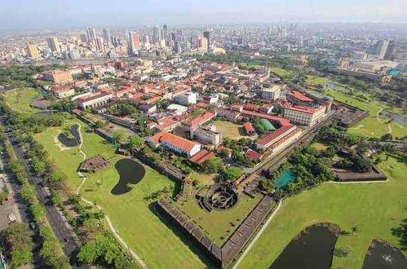

Banaue rice terraces(ifugao)
Banaue rice terraces(ifugao)UNESCO site, ancient terraces carved into mountains, known as the "8th Wonder of the World".
.jpeg) Mayon Volcano(albay)
Mayon Volcano(albay)Perfect cone-shaped active volcano, famous for its beautiful symmetry.

Intramuros(manila)Old walled city from the Spanish era, with historic churches and forts.
 Taal volcano(batangas)
Taal volcano(batangas)Unique volcano inside a lake, one of the smallest active volcanoes in the world.
 Sagada & Hanging Coffins
Sagada & Hanging CoffinsOld walled city from the Spanish era, with historic churches and forts.
 Chocolate Hills(bohol)
Chocolate Hills(bohol).jpeg) Fort Sanpedro (cebu)
Fort Sanpedro (cebu) Kawasan Falls
Kawasan Falls Siquijor Island (negros occidental)
Siquijor Island (negros occidental).jpeg) Boracay Island (aklan)
Boracay Island (aklan) Lake cebu
Lake cebu.jpeg) Siargao Islands(surigao del norte)
Siargao Islands(surigao del norte) Divine mercy shrine
Divine mercy shrine Maria cristina falls(iligan City)
Maria cristina falls(iligan City) Samal Island (davao delnorte)
Samal Island (davao delnorte)